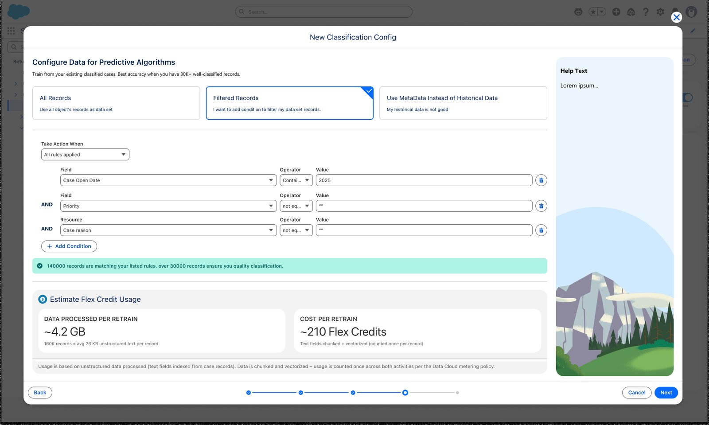
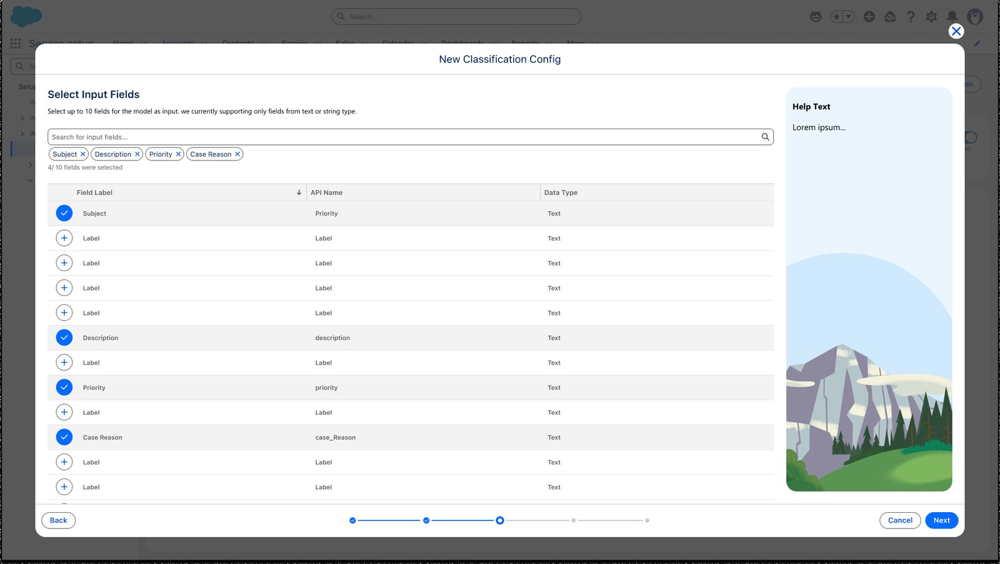
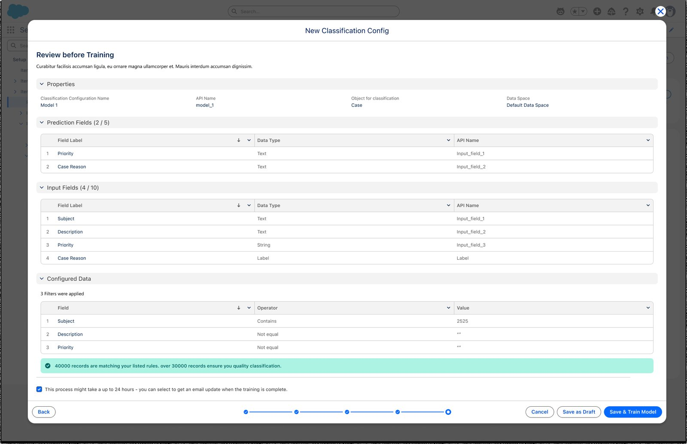
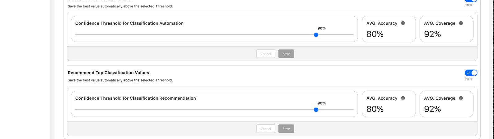
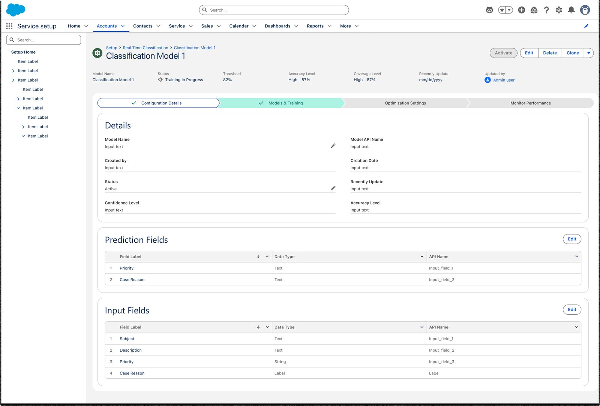

Teaching a case to fill itself in
An administrator who has never trained a model decides whether to trust one, and how much of the work to hand it.

Overview
A support case arrives with its category, its reason and its priority all blank. Someone has to fill those in, on every case, before the case can be routed. A model can do it. The design problem is upstream of that: an administrator who has never trained a model has to decide whether to trust it, and how much of the work to hand it.
- Role
- Product designer. Setup flow, the rep experience, prototyping.
- Company
- Salesforce, Service Cloud
- Users
- Service admins, and the reps living with the result
- Dates
- 2025–2026
Who ends up making the call
Classification itself is old. What changed is who gets to set it up. This runs inside the admin console, so the person configuring it is a Salesforce administrator. The persona we designed against writes no code and has no data scientist to call on. They know their org's data better than anyone. They have never chosen an algorithm, read an accuracy score, or decided what a model is allowed to do on its own.
Before any of this, reps filled those fields in by hand. Our own research put that at four to eight minutes a case, and fifteen to twenty per cent of their working time.
Every hard question in the feature lands on that person. Which fields should the model predict. Which fields should it read. Is the historical data good enough to learn from. Is the accuracy score good, and good enough for what. The interface either makes those answerable or it produces confident nonsense at scale.
The principle
A model that is wrong quietly is worse than one that is wrong loudly.
The first version did more
The early design let an admin choose several algorithms, train them side by side, and compare the results before picking one to run. It did not survive the release. I argued that mixing two kinds of model inside one configuration was too complex to set up and too complex to reason about afterwards, and the scope came down to a single algorithm, trained once.
The piece I argued for and lost was a fallback. An org with no usable history has nothing to train on, and I wanted a language model to cover that case rather than hand the admin an empty result. It was cut from the same release. It came back later as a flow of its own, for orgs starting from nothing.
Comparison was the most natural way for an admin to build confidence in a model, and it was the part that went. In the final design that evidence lives on the model's own page. Each predicted field reports its own accuracy and coverage. There is a panel for testing the model against a case. And the thresholds cap what it does without asking.
Five steps, each one a decision
Setup is a five-step flow rather than a settings page. The sequence matters, because each step narrows what the next one can be, and because it lets the interface explain a decision at the moment it is being made.
- Model properties. Name it, pick the object being classified, pick the data space. Deliberately dull. The first screen of a hard flow should be one nobody can get wrong.
- Fields to predict. Up to five, and only picklist or lookup fields. The table shows a controlling-field column, so a four-level category hierarchy reads as a hierarchy rather than four unrelated fields.
- Input fields. Up to ten, text only. This is the step where an admin's own knowledge is worth more than any default, because they know which of their fields actually carry the customer's problem and which are boilerplate.
- Training data. The heaviest screen, and the one below.
- Review. Everything chosen, on one page, before anything runs. Save as a draft or start training.


The training-data step carries the whole feature
Three routes out of it. Use every record on the object. Filter down to a subset. Or skip historical data entirely and train from metadata, which is the option for an admin whose own answer is "my historical data is not good."
That third option matters more than it looks. Most orgs have years of cases classified inconsistently by people who were guessing. Offering only the first two routes would train a model to reproduce that mess and present the result as intelligence. Naming the bad-data case in the interface makes it a supported choice rather than a failure to hide.
Filtering is a condition builder, and it counts as you go. A live record count sits under the rules with the quality line next to it: thirty thousand well-classified records is where accuracy becomes reliable. So the admin is not filtering blind and then discovering the problem after a training run. They watch the number cross the line, or fail to.
The same panel estimates what the run will cost, in data processed and in credits, with a sentence explaining how the metering works. Cost is part of the decision. Putting it two screens away from the decision would be a choice to hide it.
Two thresholds, three behaviours
Training produces a confidence score per prediction. What happens next is the part I care most about, because it is where authority actually gets divided.
The admin draws two lines. Above the higher one, the model fills the field in and nobody is asked. Between the two, the top three predictions are offered to a rep, who picks one or ignores them. Below the lower one the model stays quiet and the field is left empty.
One rule sits above all three. If a person has already filled the field in, the model leaves it alone.
The admin is not guessing where to put those lines. After training, the model is scored against a held-out set of recent cases, and the admin sees the accuracy and the coverage it would get at each threshold value. Moving the line shows what it costs.

The loudest complaint from the beta pilot was that automation still needed custom code. In the next version it is set up entirely in clicks, down to the assignment rules that route a case once its fields are filled.
What the admin sees after training
The configuration becomes a record with its own page. Status, threshold, accuracy and coverage sit in the header, and four tabs hold the rest: configuration details, models and training, optimisation, and performance.

Accuracy and coverage are reported per predicted field rather than as one number for the model. A model can be strong on Priority and weak on Case Reason. Averaging those into a single score would hide exactly the thing the admin needs to act on, and the action it points to is specific: raise the threshold on the weak field, or leave that field to people.
There is a test panel on the same tab. Type a subject and a description, run it, see what the model says. It is the smallest feature on the page and I would defend it hardest. Nobody trusts a percentage. People trust a thing they poked at with a case they remember.
The loop back
The beta shipped without any view of how the model was doing once it was switched on. An admin could hand it authority and then see nothing. The performance tab, designed for the next release, closes that gap. It tracks how many cases were classified, how many went through automatically, and how often a rep overrode the answer. Override rate is the honest metric in that set. It is the only one measured against a human who looked at the same case and disagreed, and a rising override rate is the signal to pull a threshold back down.
That closes the loop the thresholds opened. An admin grants the model authority, watches what it does with it, and takes some back.
About the numbers
The figures on the screens are placeholders, so I have not quoted them as results. The product is still in beta, and there are no production results for it yet.
The model underneath was proven first, in an internal deployment run by another team, where it clearly beat the system it replaced. That result is why this product was built. The setup, the thresholds and the monitoring described here came after it.
Paperwork that outweighed the work →